Motor no backend; tabuleiro em Canvas no navegador.
Comunicação
REST + WebSocket
Protocolo tipado dos dois lados.
Persistência
Arquivos de texto
Ranking, configurações e repetições, sem banco.
Qualidade
Testes e Javadoc
Regras críticas testadas; o build reprova Javadoc faltando.
Entrega
Um JAR, dois cliques
Só Java 17 e um navegador.
4
Documentação · requisitos
Regras de negócio: as regras do jogo
15 de 22 regras aparecem no código; as outras estão no README e na especificação. A coluna Slide diz onde cada um aparece no código.
Código
O que pede
Slide
RN03
O material é sorteado entre os liberados na fase e determina densidade, cor e multiplicador de pontos
14
RN04
As sete formas são embaralhadas e distribuídas antes que qualquer uma se repita (sacola)
11
RN05
Reservar um elemento por vez; a troca só pode ser feita uma vez a cada elemento gerado
12
RN07
Massa do bloco = densidade × volume; massa da estrutura = soma das massas
16
RN08
Centro de massa horizontal = média das colunas, ponderada pela massa
16
RN09
Desvio = |centro de massa − eixo da base|, em colunas
17
RN10
Índice de estabilidade: 100 % com desvio nulo, 0 % no limite, variando linearmente
17
RN11
Desvio acima do limite: os blocos acima da linha de maior massa caem por gravidade, coluna a coluna
19
RN13
Fim de jogo se a peça nova já nasce colidindo, ou colapso com a pilha acima de 18 linhas
23
RN15
Só entram no ranking partidas concluídas sem uso do desfazer
26
RN17
Fechar linha com estabilidade abaixo de 25 % é obra ousada: vale 50 % a mais
15
RN18
Cada peça seguida que fecha linha soma 10 % à próxima eliminação, até 100 %
15
RN20
Coluna sem nada embaixo está em balanço; peça mais densa que o apoio perde esses blocos
21
RN21
Cada material aguenta um peso máximo em cima; passou, o bloco é esmagado
22
RN22
A parte de cima também é medida, sobre onde encosta; vale a pior das duas medidas
17
5
Documentação · requisitos
Requisitos funcionais: o que o sistema faz
14 de 31 requisitos aparecem no código, e os 31 estão prontos. A coluna Slide diz onde cada um aparece no código.
Código
O que pede
Slide
RF03
Gerar elementos continuamente enquanto a partida estiver em andamento
11
RF05
Exibir os três próximos elementos da fila, com forma e material
11
RF08
Girar nos dois sentidos, com deslocamento corretivo quando a rotação causar sobreposição
13
RF10
Reservar o elemento em queda e trocá-lo pelo reservado, uma vez por elemento
12
RF11
Fixar o elemento quando ele colidir com o fundo ou com um bloco fixado
14
RF13
Pontuação por linhas simultâneas, material predominante e nível
15
RF14
Recalcular o centro de massa sempre que a composição do tabuleiro mudar
16
RF15
Exibir continuamente o índice de estabilidade, o desvio e o limite
28
RF16
Sinalizar visualmente a aproximação do limite antes do colapso
28
RF17
Executar o colapso, reacomodando os blocos desprendidos
19
RF20
Encerrar a partida nas condições de fim de jogo e exibir a tela de resultado
23
RF21
Registrar a pontuação no ranking persistente, com o nome do jogador
26
RF23
Registrar em pilha todas as jogadas executadas na partida
25
RF24
Reproduzir passo a passo uma partida encerrada, a partir do histórico
25
6
Documentação · requisitos
Requisitos não funcionais: como o sistema deve ser
6 de 16 aparecem no código; o RNF01 foi medido com 2 núcleos e 4 GB emulados, e o RNF04 ainda espera o duplo clique em máquina real. A coluna Slide diz onde cada um aparece no código.
Código
O que pede
Slide
RNF01
Tela a 60 quadros/s e backend a 60 atualizações/s, com 2 núcleos e 4 GB
24
RNF02
Recálculo do centro de massa incremental, em tempo constante por bloco
16
RNF08
Regras só no modelo, sem Javalin, JSON nem classes gráficas: testáveis sem servidor
10
RNF10
Colisão, rotação, linhas, centro de massa e protocolo com testes automatizados
18
RNF11
Falha ao ler ranking ou configuração não impede o jogo: usa valores padrão
27
RNF12
Arquivo malformado é rejeitado com registro em log, sem interromper a aplicação
27
7
Documentação · bibliotecas e referências
Com o que foi feito
Parte
Ferramenta
Regras do jogo
Java 17, só a biblioteca padrão
HTTP e WebSocket
Javalin 7 (Jetty)
JSON · log
Jackson · SLF4J
Rotas documentadas
OpenAPI + Swagger UI
Tela
Svelte 5, TypeScript, Vite, Canvas
Gráfico · som
Chart.js · Web Audio
Testes
JUnit 5 · Vitest
Build e entrega
Maven · Docker
Referências consultadas
Documentação do Java 17: coleções e java.util.concurrent
Documentação do Javalin e do Svelte 5
MDN: Canvas, WebSocket e Web Audio
Convenções do gênero: rotação SRS e sorteio pela sacola
Estática: centro de massa como média ponderada
8
Parte 2
Como cada requisito foi implementado
Prints do código do repositório, com os números de linha reais. Em cada slide: o requisito, o código e o que ele resolve.
9
Codificação · arquitetura
As regras só no Java, e um teste que garante isso
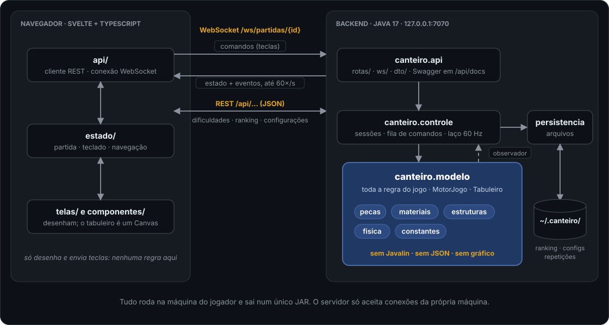
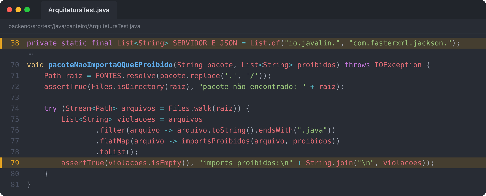
O requisito
RNF08Regras só no modelo, sem Javalin, JSON nem classes gráficas: testáveis sem servidor
O teste lê os import de cada pacote e reprova o build se o modelo importar o servidor ou o JSON
10
Codificação · fila e sacola
As próximas peças: uma sacola e uma fila
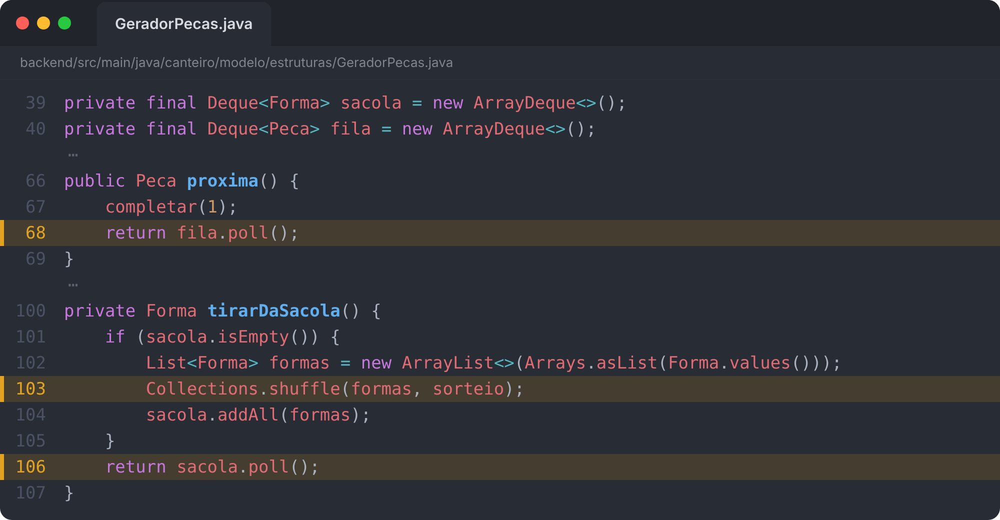
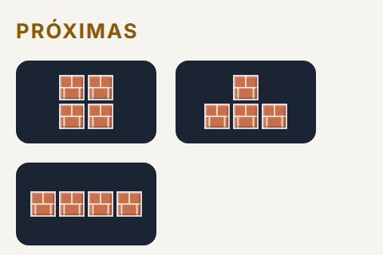
No jogo
A fila mostra as três próximas peças, com forma e material
O requisito
RN04As sete formas são embaralhadas e distribuídas antes que qualquer uma se repita (sacola)
RF03Gerar elementos continuamente enquanto a partida estiver em andamento
RF05Exibir os três próximos elementos da fila, com forma e material
Como foi feito
linha 103: a sacola vazia recebe as 7 formas embaralhadas
linha 106: tira da frente; só repete quando a sacola esvazia
Fila (ArrayDeque): o jogador vê as 3 próximas, remoção em O(1)
11
Codificação · pilha
A reserva é uma pilha, com uma troca por peça
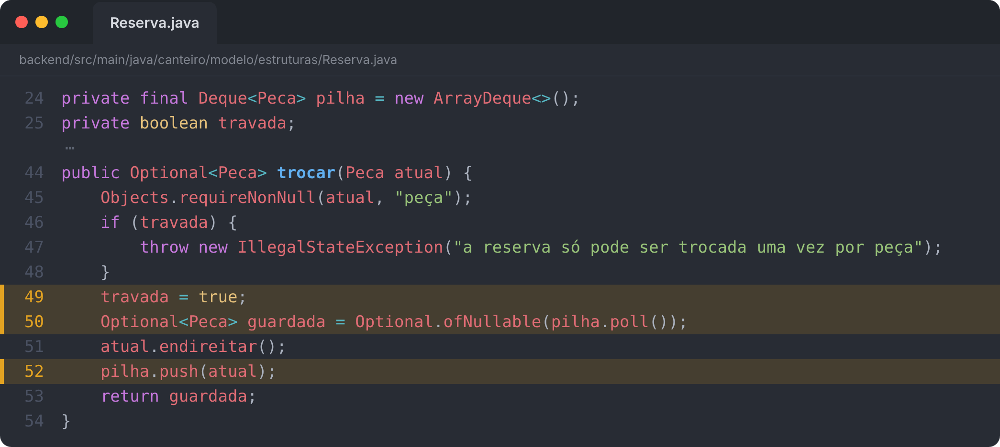
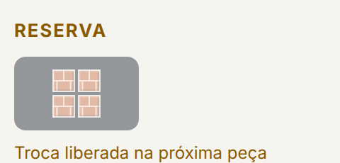
No jogo
A peça guardada fica cinza: a troca só volta na próxima peça
O requisito
RN05Reservar um elemento por vez; a troca só pode ser feita uma vez a cada elemento gerado
RF10Reservar o elemento em queda e trocá-lo pelo reservado, uma vez por elemento
Como foi feito
linha 49: trava até nascer a próxima peça
linha 50 e linha 52: pega a guardada e guarda a atual, sempre no topo
Trocar duas vezes lança exceção: a regra não depende da tela
12
Codificação · rotação
Girar com deslocamento corretivo
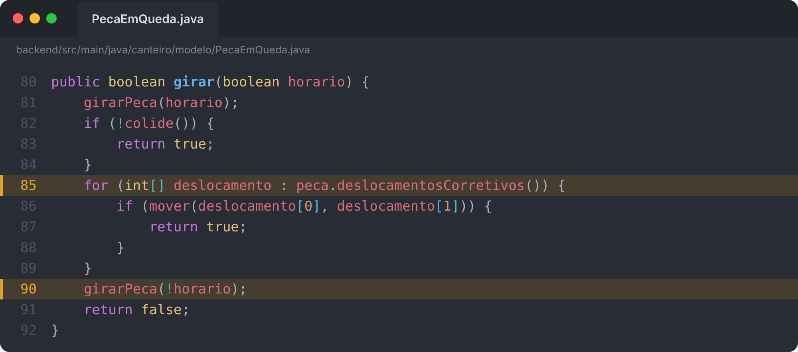
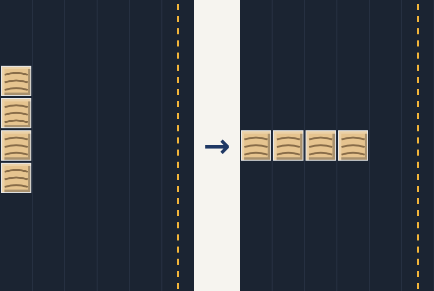
No jogo
A peça I encostada na parede gira e é empurrada para dentro
O requisito
RF08Girar nos dois sentidos, com deslocamento corretivo quando a rotação causar sobreposição
Como foi feito
Gira; se não colidiu, pronto
linha 85: se colidiu, tenta cada deslocamento da tabela da própria peça (padrão SRS)
linha 90: nenhum serviu, desfaz o giro
13
Codificação · polimorfismo
Fixar a peça sem perguntar qual material é
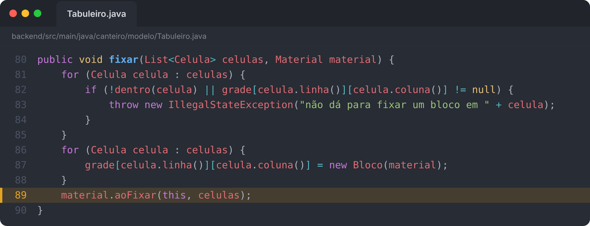
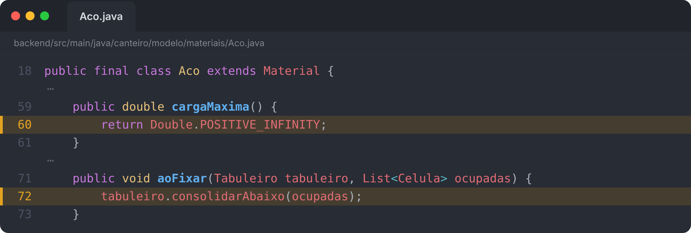
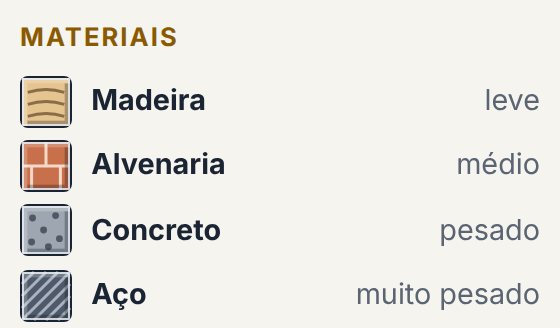
No jogo
Cada material tem textura e peso próprios, sem depender da cor
O requisito
RF11Fixar o elemento quando ele colidir com o fundo ou com um bloco fixado
RN03O material é sorteado entre os liberados na fase e determina densidade, cor e multiplicador de pontos
Como foi feito
linha 89: o tabuleiro chama aoFixar sem saber o material
O Aco sobrescreve: aguenta qualquer peso e firma os blocos de baixo
Forma e material em duas hierarquias: 11 classes em vez de 28
14
Codificação · pontuação
A pontuação junta linhas, nível, material e risco
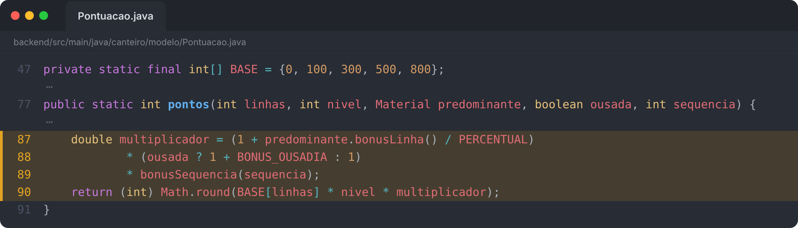
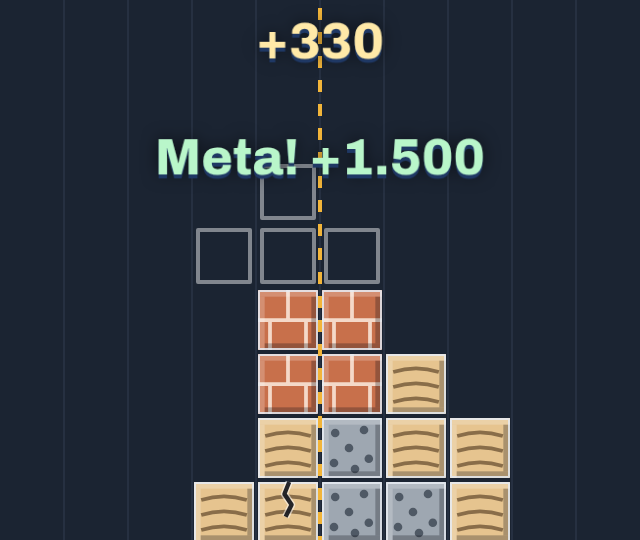
No jogo
Linha fechada: os pontos da jogada e o bônus da meta do nível
O requisito
RF13Pontuação por linhas simultâneas, material predominante e nível
RN17Fechar linha com estabilidade abaixo de 25 % é obra ousada: vale 50 % a mais
RN18Cada peça seguida que fecha linha soma 10 % à próxima eliminação, até 100 %
Como foi feito
linha 47: base por linhas de uma vez (1 a 4)
linha 87: bônus do material × obra ousada × sequência
Linhas 78 a 86 (dobradas): valores inválidos lançam IllegalArgumentException
15
Codificação · a física
O centro de massa em tempo constante
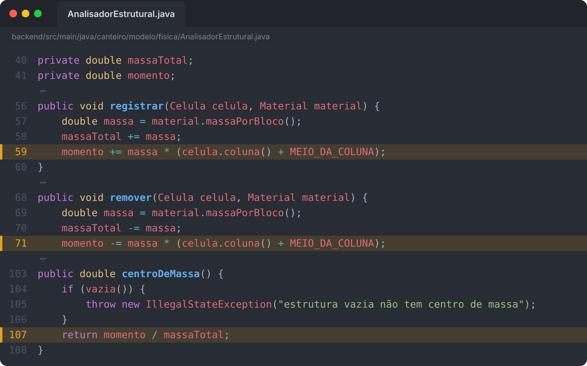
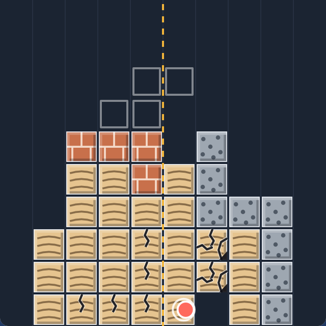
No jogo
O eixo da base (tracejado) e o centro de massa (ponto vermelho)
O requisito
RF14Recalcular o centro de massa sempre que a composição do tabuleiro mudar
RNF02Recálculo do centro de massa incremental, em tempo constante por bloco
RN07Massa do bloco = densidade × volume; massa da estrutura = soma das massas
RN08Centro de massa horizontal = média das colunas, ponderada pela massa
Como foi feito
linha 59: fixar soma massa × coluna
linha 71: remover subtrai
linha 107: o centro é uma divisão. O(1), sem varrer as 200 posições
16
Codificação · estabilidade
Do desvio ao índice de estabilidade
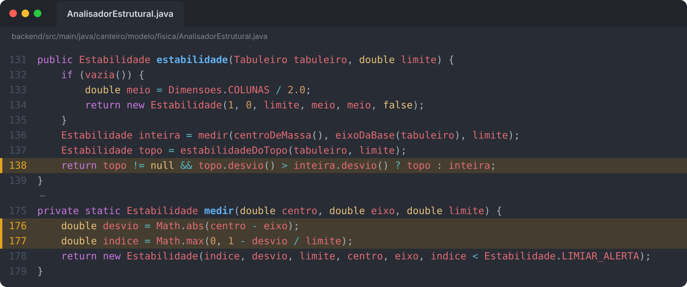
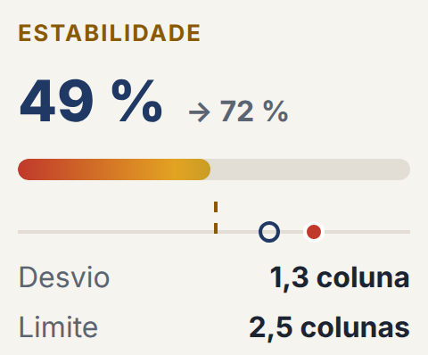
No jogo
O índice agora, a prévia com a peça atual (→ 72 %), o desvio e o limite
O requisito
RN09Desvio = |centro de massa − eixo da base|, em colunas
RN10Índice de estabilidade: 100 % com desvio nulo, 0 % no limite, variando linearmente
RN22A parte de cima também é medida, sobre onde encosta; vale a pior das duas medidas
Como foi feito
linha 176: desvio = |centro − eixo|
linha 177: índice cai em linha reta até 0 no limite
linha 138: mede a pilha inteira e a parte de cima, e vale a pior
17
Codificação · teste
Como saber que a conta rápida está certa?
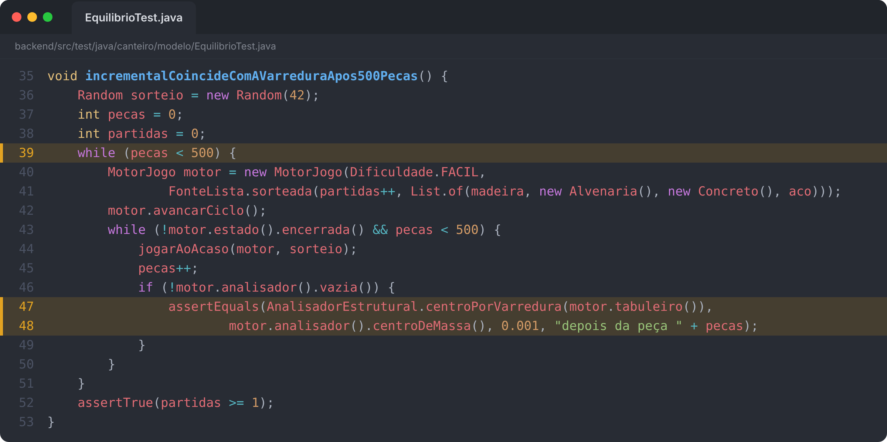
O requisito
RNF10Colisão, rotação, linhas, centro de massa e protocolo com testes automatizados
Como foi feito
Joga 500 peças ao acaso em várias partidas
linha 47: a cada peça, compara com a varredura completa
Pega o pior erro possível: um acumulador dessincronizado, que gera colapso injusto
18
Codificação · recursividade
Passou do limite, a obra desaba
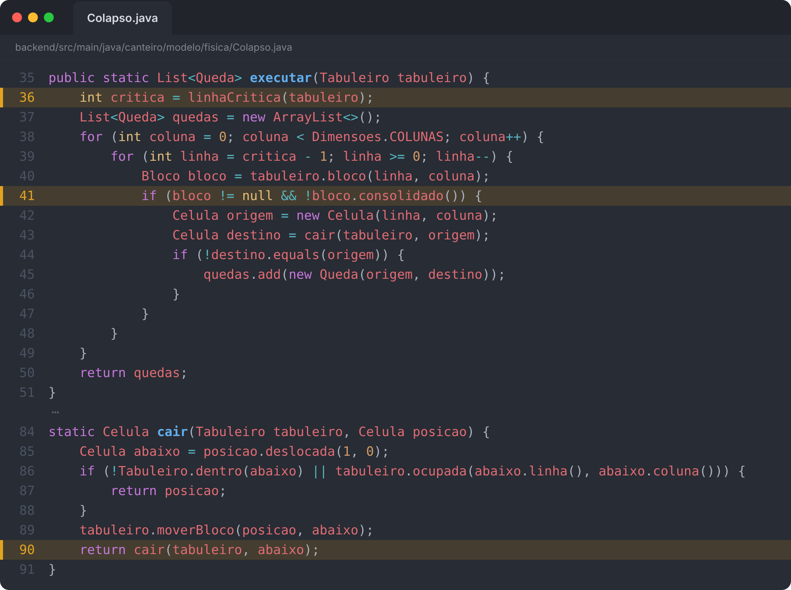
O requisito
RN11Desvio acima do limite: os blocos acima da linha de maior massa caem por gravidade, coluna a coluna
RF17Executar o colapso, reacomodando os blocos desprendidos
Como foi feito
linha 36: acha a linha de maior massa
linha 41: bloco firmado pelo aço não cai
linha 90: cair chama a si mesma até achar apoio
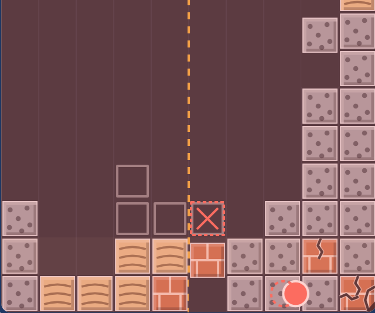
No jogo
No colapso, a tela fica vermelha e a penalidade aparece (−540)
19
Codificação · problema encontrado
Jogando, parecia um encaixe de blocos comum
Problema
A única física era o centro de massa da pilha inteira.
Linhas quase cheias puxam esse centro para o meio: quase nunca desabava, e o material quase não importava.
Solução: física local
Balanço (RN20): peça mais pesada que o apoio perde a ponta
Esmagamento (RN21): cada material aguenta um peso em cima
Parte de cima (RN22): vale a pior das duas medidas (slide 17)
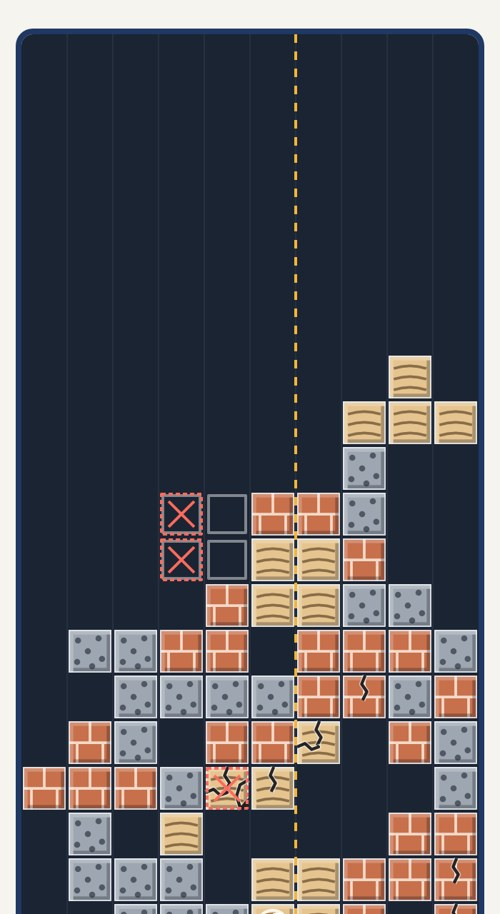
Rachaduras e o X nos blocos que a jogada vai quebrar.
20
Codificação · balanço
Concreto sobre madeira perde a ponta
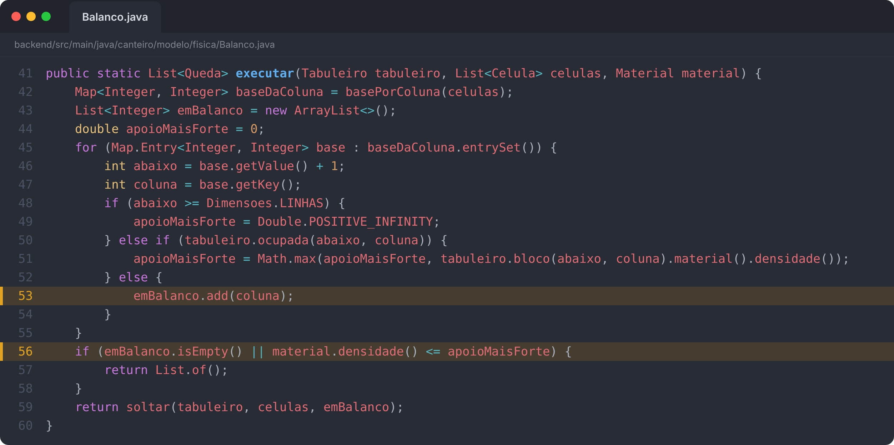
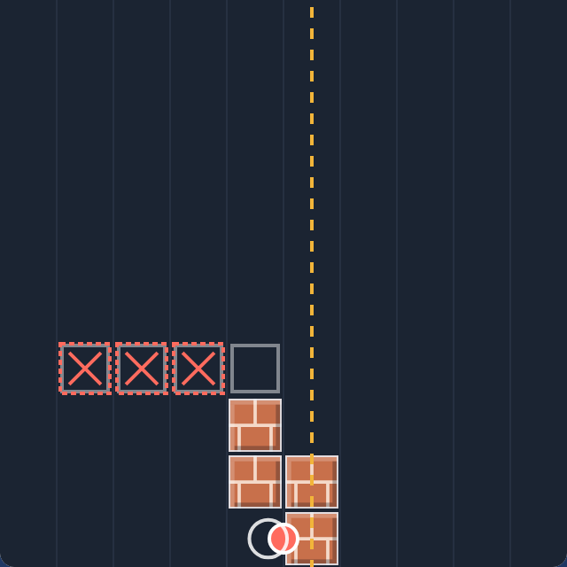
No jogo
A prévia marca com X os blocos que vão se soltar
O requisito
RN20Coluna sem nada embaixo está em balanço; peça mais densa que o apoio perde esses blocos
Como foi feito
linha 53: coluna sem nada embaixo está em balanço
linha 56: se a peça não for mais densa que o apoio, segura
Senão os blocos em balanço caem, com o mesmo cair recursivo do colapso
21
Codificação · esmagamento
Pesado embaixo, leve em cima
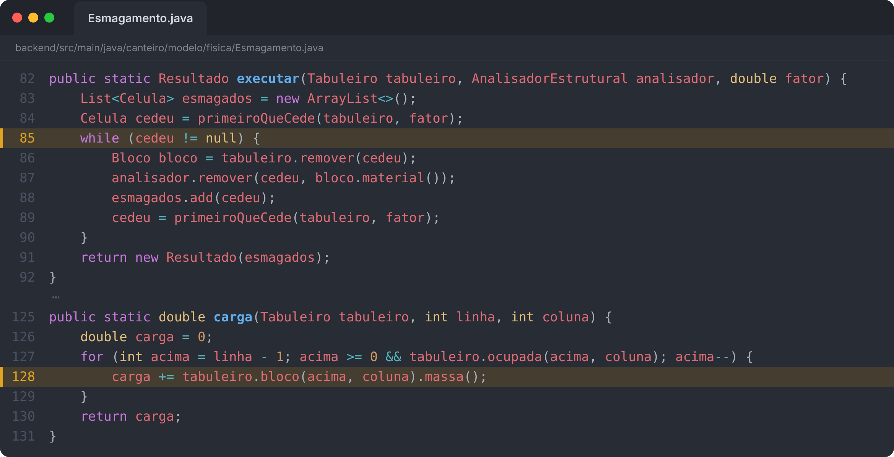
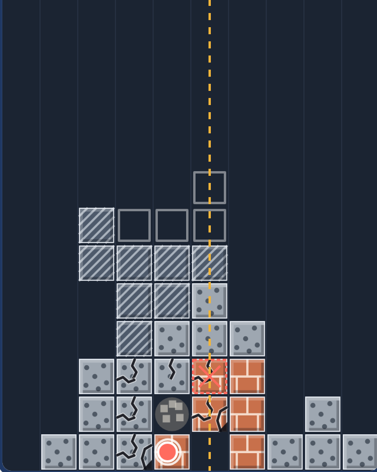
No jogo
O bloco leve embaixo do pesado racha e é esmagado
O requisito
RN21Cada material aguenta um peso máximo em cima; passou, o bloco é esmagado
Como foi feito
linha 128: a carga é a massa dos blocos colados acima
linha 85: esmaga um, recalcula, até ninguém mais ceder
Remove do analisador também, para o centro de massa continuar certo
22
Codificação · problema encontrado
Bug: a pilha chegava ao topo e a tela congelava
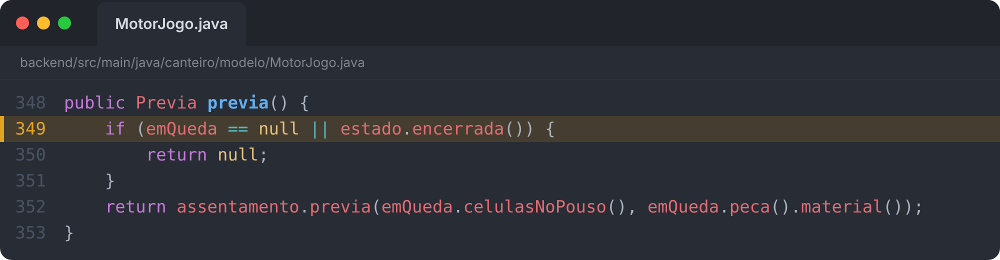
O requisito
RF20Encerrar a partida nas condições de fim de jogo e exibir a tela de resultado
RN13Fim de jogo se a peça nova já nasce colidindo, ou colapso com a pilha acima de 18 linhas
Causa
A prévia da jogada simula o assentamento numa cópia da grade. No fim de jogo, a peça nasce em cima da pilha: a prévia tentava fixá-la em células ocupadas e lançava IllegalStateException.
Como a prévia vai dentro do estado, o estado FIM_DE_JOGO nunca chegava à tela.
Correção
linha 349: sem prévia com a partida encerrada. Dois testes novos jogam até o fim e conferem o estado enviado.
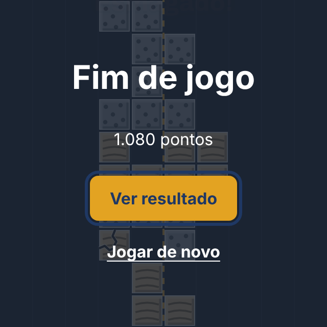
No jogo
Depois da correção: a pilha chega ao topo e a tela de fim aparece
23
Codificação · concorrência
Só uma thread mexe no jogo
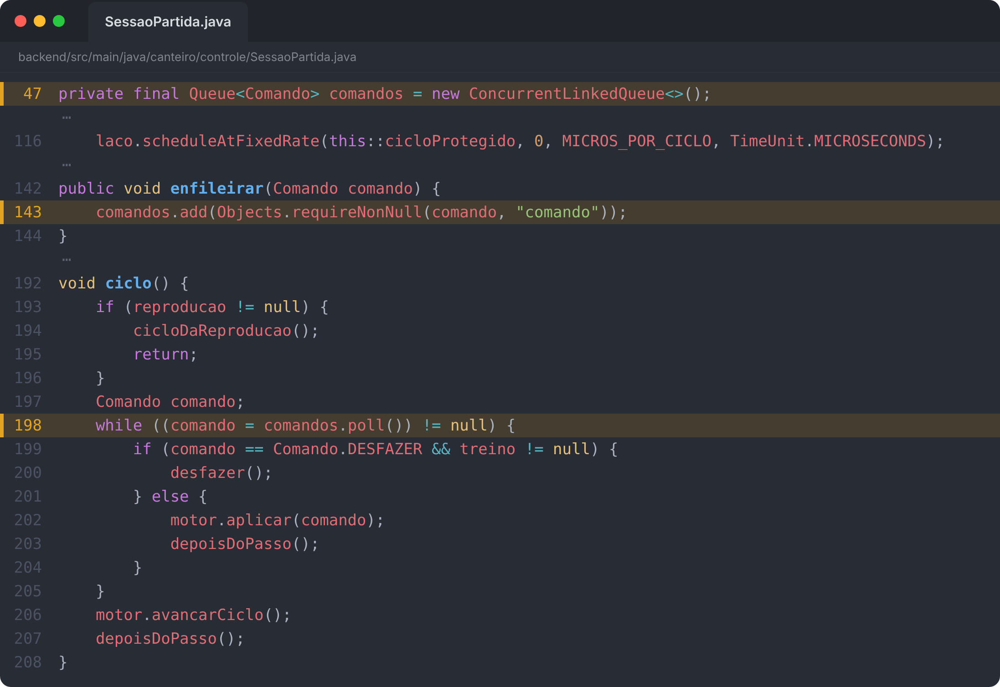
O requisito
RNF01Tela a 60 quadros/s e backend a 60 atualizações/s, com 2 núcleos e 4 GB
Como foi feito
linha 47: a fronteira entre as threads é uma fila concorrente
linha 143: a thread do WebSocket só enfileira
linha 198: o laço, 60 vezes por segundo, esvazia a fila e avança. Sem trava
24
Codificação · repetição
Mesma semente e mesmos comandos, mesma partida
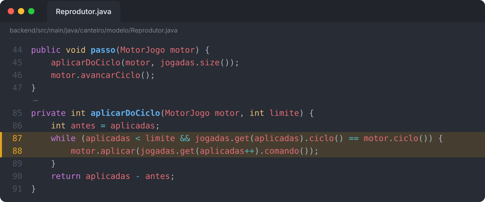
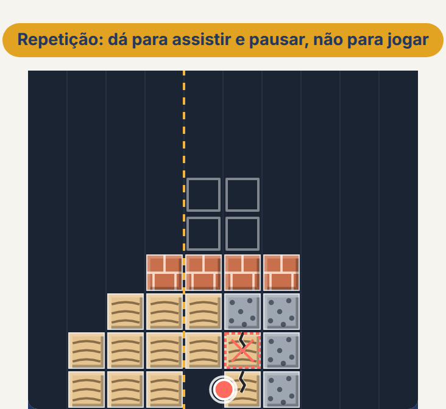
No jogo
A repetição tem a própria faixa: dá para assistir, não para jogar
O requisito
RF23Registrar em pilha todas as jogadas executadas na partida
RF24Reproduzir passo a passo uma partida encerrada, a partir do histórico
Como foi feito
Como só uma thread mexe no motor, o jogo é determinístico
A gravação guarda só a semente e cada comando com o ciclo em que chegou
linha 87: reproduzir é aplicar cada comando no mesmo ciclo
25
Codificação · ranking
A pontuação do ranking nunca vem do navegador
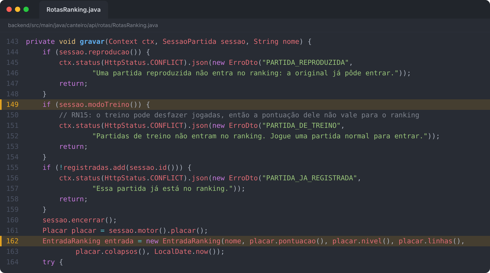
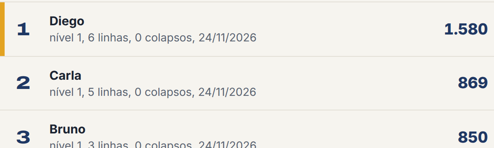
No jogo
O ranking guarda as dez melhores, uma por pessoa
O requisito
RF21Registrar a pontuação no ranking persistente, com o nome do jogador
RN15Só entram no ranking partidas concluídas sem uso do desfazer
Como foi feito
O navegador manda só o id da partida e o nome
linha 149: partida de treino (com desfazer) é recusada
linha 162: a pontuação é lida da sessão, no servidor
26
Codificação · exceções
Arquivo estragado nunca impede o jogo de abrir
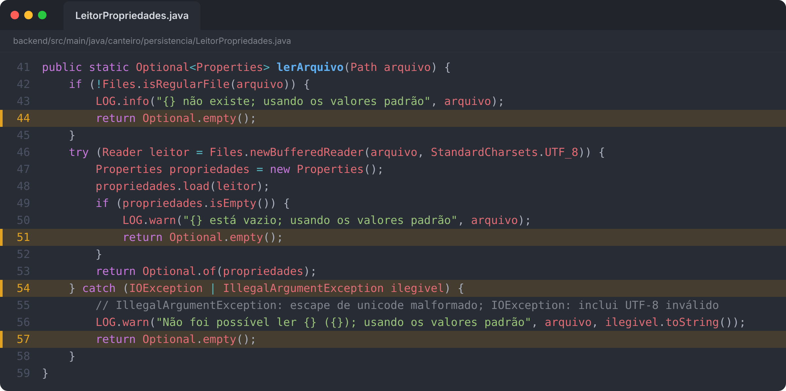
O requisito
RNF11Falha ao ler ranking ou configuração não impede o jogo: usa valores padrão
RNF12Arquivo malformado é rejeitado com registro em log, sem interromper a aplicação
Como foi feito
Sem banco: ranking, configurações e repetições são arquivos de texto
linha 54: ilegível vira aviso no log
Ausente, vazio ou ilegível: Optional.empty(), e vale o padrão de dentro do JAR
27
Codificação · a tela
O painel avisa antes de desabar
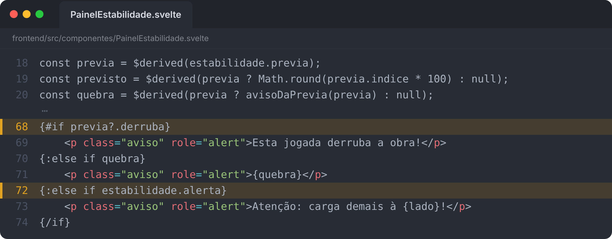
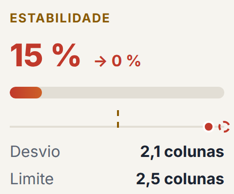
No jogo
O painel avisa antes: "Esta jogada derruba a obra!"
O requisito
RF15Exibir continuamente o índice de estabilidade, o desvio e o limite
RF16Sinalizar visualmente a aproximação do limite antes do colapso
Como foi feito
O frontend não calcula nada: recebe a estabilidade pronta do backend
A prévia diz onde o centro de massa vai parar com a peça atual
Avisa se a jogada derruba a obra, quebra blocos ou se a carga está pesando de um lado
28
Codificação · testes e desempenho
Como sabemos que funciona
406
testes no backend (JUnit 5)
234
testes no frontend (Vitest)
60
quadros/s na tela e ciclos/s no backend, com 2 núcleos e 4 GB
14 ms
da tecla à tela (mediana), com 2 núcleos; meta de 50 ms
RNF01 medido: 15 min de jogo com o jogo e o navegador presos a 2 núcleos e 4 GB (emulados). Ciclo médio de 0,08 ms, contra a meta de 4 ms; backend com até 76 MB.
RNF04: Chrome, Chromium e Firefox abrem a partida e respondem ao teclado, sem erro no console. O CI abre o JAR no Linux, no Windows e no macOS.
Testes manuais: 7 casos com roteiro e 1 exploratório no JAR, e os 8 passaram, sem nenhum bug no jogo. O roteiro do colapso estava desatualizado (empilhar numa parede não derruba mais, porque o eixo acompanha a base) e foi corrigido.
5 jogadores de fora do grupo: nota 4,2 de 5 para "entendi sem explicação". A dificuldade não pediu ajuste, mas 2 nem sempre souberam qual peça derrubou a obra.
29
Parte 3 · ao vivo
O jogo funcionando
Roteiro da demonstração
Abrir o JAR
Partida no normal: índice e anel da prévia
Peso de um lado da base até o colapso
Aço firmando os blocos de baixo
Fim de jogo, ranking e relatório
O que ainda não está pronto
Duplo clique no Ubuntu: não abre o JAR (o atalho do Java está quebrado no sistema); abre com java -jar
Duplo clique no Windows e no macOS, em máquina real
Desempenho numa máquina antiga de verdade (o medido foi emulado)
Online: sem login, e um deploy encerra as partidas abertas
30
Conclusão
O que achamos da disciplina
O que mais ajudou
A matéria resolvendo um problema de verdade
Fila, pilha e tabela hash deixaram de ser exercício e viraram a sacola de peças, a reserva e o ranking. Herança e polimorfismo pouparam uma cadeia de if por tipo de peça e de material.
O que foi difícil
Escopo e equipe
Um jogo em tempo real é grande para um semestre. O grupo perdeu uma integrante no caminho, e Git e GitHub foram uma barreira para quem não programava.
O que mudaríamos
Ferramentas e entregas mais cedo
Ver Git e testes automatizados no começo da disciplina, e ter entregas parciais do código ao longo do semestre, e não só da documentação.
31
Obrigado!
Quer jogar? Aponte a câmera do celular para o código ao lado. Funciona no navegador, sem instalar nada.